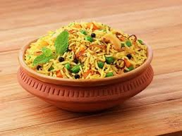
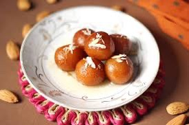

Popular Indian dishes
Explore the flavorsof indian through its diiverse and rich culinary traditions!
North Indian Cuisine
North India is known for its rich, aromatic, and flavorful dishes often cooked with ghee and spices:
- Biryani: A fragrant rice dish made with aromatic spices and meat or vegetables
- Butter Chicken:A creamy, tomato-based curry that's a favorite worldwide.
- Paneer Tikka: Marinated paneer cubes grilled to perfection.

Aromatic and flavorful Biryani
South indian Cuisine
South India offers a wide array of dishes with a perfect blend of spices and tangy flavors:
Sweet delight
No Indian meal is complete without indulging in some mouth-watering desserts:
- Gulab Jamun: Fried milk solids soaked in sugar syrup.
- Rasgulla: Soft and spongy cheese balls in light sugar syrup.
- Payasam:A South Indian dessert made of milk, rice, and jaggery.

Irresistible Gulab Jamun